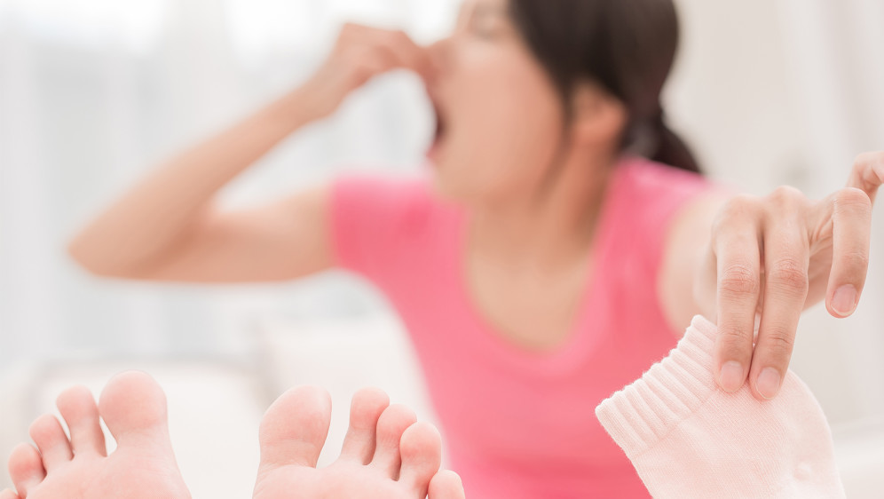

आंकड़ों के अनुसार, औसतन 5 में से 1 व्यक्ति पैरों और नाखूनों के फंगल संक्रमण से पीड़ित होता है। कारण कमजोर प्रतिरक्षा या अनुचित जूते हो सकते हैं।
विशेषज्ञ गजेंद्र सिंह बताते हैं कि कैसे आधुनिक विज्ञान ने इन अप्रिय और खतरनाक बीमारियों से छुटकारा पाने के लिए अपने घर में रहना संभव बना दिया है।"मैं आपको सूचित करना चाहता हूं कि, कुछ की राय के विपरीत, कवक न केवल एक सौंदर्य समस्या है, बल्कि स्वास्थ्य के लिए भी खतरा है। पैर या लैटिन ऑनिकोमाइकोसिस का एक फंगल संक्रमण एक गंभीर स्वास्थ्य खतरा हो सकता है यदि इसे रोका नहीं गया है। यह एलर्जी का कारण बन सकता है, प्रतिरक्षा प्रणाली को कमजोर कर सकता है और गंभीर पुरानी बीमारियों को जन्म दे सकता है।"
इसका क्या मतलब है?
गजेंद्र सिंह: इसका मतलब है कि पैर की यह छोटी सी समस्या घातक हो सकती है! तो, याद रखने वाली कुछ बातें: पहला, फंगस केवल नाखूनों या पैरों की समस्या नहीं है, बल्कि एक संकेत है कि शरीर में बाकी सब कुछ परजीवियों द्वारा हमला किया जा रहा है। वे शरीर में रहते हैं और दूसरी बात, कवक मृत्यु का प्रत्यक्ष कारण नहीं हो सकता है, लेकिन वे आपके पास पहले से मौजूद अन्य सभी बीमारियों के लिए उत्प्रेरक के रूप में कार्य करते हैं।
इसलिए, यदि आप पेट या जिगर की बीमारियों जैसे पुराने रोगों से पीड़ित हैं, तो कवक की उपस्थिति में ये रोग बढ़ जाएंगे ये सभी रोग पुराने से तीव्र हो जाएंगे। दरअसल, कवक हमारे इम्यून सिस्टम को बहुत ज्यादा प्रभावित करते हैं।
कवक के पहले लक्षण क्या हैं? यदि आप जोखिम में हैं तो आप कैसे जांच सकते हैं?
गजेंद्र सिंह: कुछ मुख्य लक्षण हैं:
- उंगलियों के बीच की त्वचा का फटना (आमतौर पर पहली और दूसरी या चौथी और पांचवीं उंगलियों के बीच)
त्वचा पर रसौली
खुजली
लालपन
- सूजी हुई उंगलियां, क्षतिग्रस्त नाखून।
प्रक्रिया आमतौर पर उंगलियों के बीच त्वचा की परतों में शुरू होती है। त्वचा छिल जाती है, जल जाती है और खुजली होती है।
आंकड़ों के अनुसार भारत के लगभग 25% नागरिक फंगस से पीड़ित हैं। कुछ रोगी रोग की अपेक्षाकृत प्रारंभिक अवस्था में होते हैं। मदद करने में आसान। यदि रोग की रोकथाम नहीं की जाती है, तो यह प्रगति करेगा और ठीक होने में अधिक समय लेगा। एक और समस्या यह है कि सभी रोगी चिकित्सा सहायता नहीं लेते हैं। बहुत से लोग सोचते हैं कि कवक अपने आप दूर हो जाएगा। दुर्भाग्य से यह संभव नहीं है। कवक जिसे रोका नहीं गया था वह न केवल गायब हो जाता है, बल्कि अन्य पैर की उंगलियों और अंततः पूरे पैर में फैल जाता है।
आइए मुख्य भाग पर आते हैं और यही प्रश्न है इस प्रकार के कवक को कैसे रोकें ?
गजेंद्र सिंह: हमारे अस्पतालों में अक्सर इस्तेमाल की जाने वाली मानक विधि रोगग्रस्त नाखूनों को हटाने के लिए सर्जरी है। इसमें सुधार होने में करीब दो माह का समय लगता है। मुझे लगता है कि यह इक्कीसवीं सदी के लिए एक आदिम तरीका है, लेकिन कई डॉक्टर लगभग सभी मामलों में इसकी सलाह देते हैं!
विशिष्ट निजी क्लीनिक अपने रोगियों को विभिन्न प्रकार के कवक की रोकथाम प्रदान करें। हालांकि, उनका मुख्य नुकसान ऐसी प्रक्रियाओं की उच्च लागत है।
लेकिन मैं केवल नकारात्मक के बारे में बात नहीं करूंगा। सौभाग्य से, अब बहुत अधिक व्यावहारिक समाधान उपलब्ध है। हम इसे अस्पतालों में देखभाल के मानक के रूप में लागू करने का प्रयास कर रहे हैं। एक अच्छा सकारात्मक उदाहरण रोगी मंजुला भार्गवी हैं, जिन्हें अभी एक महीने पहले गंभीर फंगल संक्रमण हुआ था और अब वह स्वस्थ हैं।
हमने अपने केंद्र में एक स्वतंत्र सर्वेक्षण के साथ शुरुआत की। इसके परिणामों से पता चला है कि यह उत्पाद फंगस से पीड़ित रोगियों की मदद करता है। 98% मामलों में, फंगस को स्थायी रूप से हटाना मददगार होता है। इसके बाद, आप निवारक उद्देश्यों के लिए स्प्रे का उपयोग कर सकते हैं, क्योंकि पुन: संक्रमण हमेशा हो सकता है। स्प्रे की लागत क्लिनिक में रोकथाम पाठ्यक्रम की लागत से लगभग 30 गुना कम है। और इसकी दक्षता थोड़ी अधिक है।
क्या आपके सर्वेक्षण ने इस उत्पाद की प्रभावशीलता की पुष्टि की है?
गजेंद्र सिंह: हम प्रभावशीलता के बारे में 100% सुनिश्चित हैं। सबसे पहले, यह एक पेटेंट उत्पाद है । हमने अपने मरीजों का सर्वेक्षण किया है क्योंकि हमें आधिकारिक आंकड़ों पर भरोसा नहीं है। जैसा कि मैंने कहा, ने उत्कृष्ट परिणाम दिखाए। स्प्रे की संरचना में निम्नलिखित तत्व शामिल हैंI जिसमें लैवेंडर का अर्क, नींबू का अर्क, गुलमेहंदी का अर्क, यूरिया, ग्लिसरीन, तरल पदार्थ होते हैं, सूजन को कम करने और संक्रमण के स्रोत को कम करने में मदद करता है। नींबू का अर्क कीटाणुरहित करता है, जबकि लैवेंडर का अर्क खुजली और दर्द से राहत दिलाने में मदद करता है। सहायक तत्व त्वचा की स्थिति में सुधार करते हैं। छिड़काव फंगस को हटा देता है (यहां तक कि उन मामलों में जहां सर्जरी आवश्यक है) और कई समस्याओं को कम करता है, जैसे कि जलन, खुजली, त्वचा का छीलना, दर्द और अप्रिय गंध।
यह एक वास्तविक उपाय है जो पूरी दुनिया में अधिक से अधिक लोकप्रिय हो रहा है। हमारे विशेषज्ञों ने सुनिश्चित किया कि उत्पाद हमारे उत्पादन मूल्य पर उपलब्ध है। इंडिया नागरिकों को फुहार खरीदने में सक्षम होना चाहिए सर्वोत्तम संभव मूल्य। अब आप इसे ऑनलाइन खरीद सकते हैं। कोई भी इसे आसानी से ऑर्डर कर अपने घर में इस्तेमाल कर सकता है। वितरण सेवा द्वारा वितरित और शिपमेंट के वितरण और सत्यापन के बाद भुगतान किया गया। ऑर्डर करने के लिए आपको वास्तव में किसी विशेष कौशल की आवश्यकता नहीं है।
यह उत्पाद वर्तमान में केवल निर्माता की वेबसाइट पर उपलब्ध है। हम फुहार को उनके प्रस्ताव में जोड़ने के बारे में एक फार्मेसी श्रृंखला के साथ बातचीत कर रहे हैं, लेकिन वे इस उत्पाद पर एक बड़ा मार्कअप डालना चाहते हैं। हमारी स्थिति, साथ ही चिकित्सा विशेषज्ञों की स्थिति, हमें इससे सहमत होने की अनुमति नहीं देती है।
क्या के लिए कोई मतभेद हैं?
गजेंद्र सिंह: स्प्रे यह एक दवा उत्पाद नहीं है और इसलिए इसका कोई मतभेद नहीं है। सर्वेक्षण के दौरान, हमारे केंद्र में 15372 रोगियों द्वारा फुहार का उपयोग किया गया था और इसके अवयवों से कोई एलर्जी नहीं थी। स्वास्थ्य को नुकसान नहीं पहुंचाता है और विभिन्न प्रकार के कवक के लिए शरीर के प्रतिरोध को बढ़ाता है। तो, इस उत्पाद की उपस्थिति बहुत अच्छी खबर है। पैरों और नाखूनों पर फंगस सिर्फ एक सौंदर्य समस्या नहीं है, यह एक गंभीर बीमारी है जिसके घातक परिणाम हो सकते हैं। इससे पहले कि बहुत देर हो जाए, उसका जल्द से जल्द सुधार किया जाना चाहिए।
हमारे सभी पाठकों के लिए खुशखबरी! विशेष रूप से आपके लिए, निर्माता स्प्रे की कीमत कम करने के लिए सहमत हो गया है। इस सीमित समय की पेशकश के हिस्से के रूप में, आप आधे मूल्य के लिए ऑर्डर कर सकते हैं!
रों की अप्रिय गंध और पैरों के फंगल रोगों से 50% छूट पाएं! समय पर उत्तर दें: विशेष ऑफ़र केवल आज ही मान्य है! के बदले आपको स्प्रे सिर्फ . में मिलेगा - अभी क्लिक करें >>